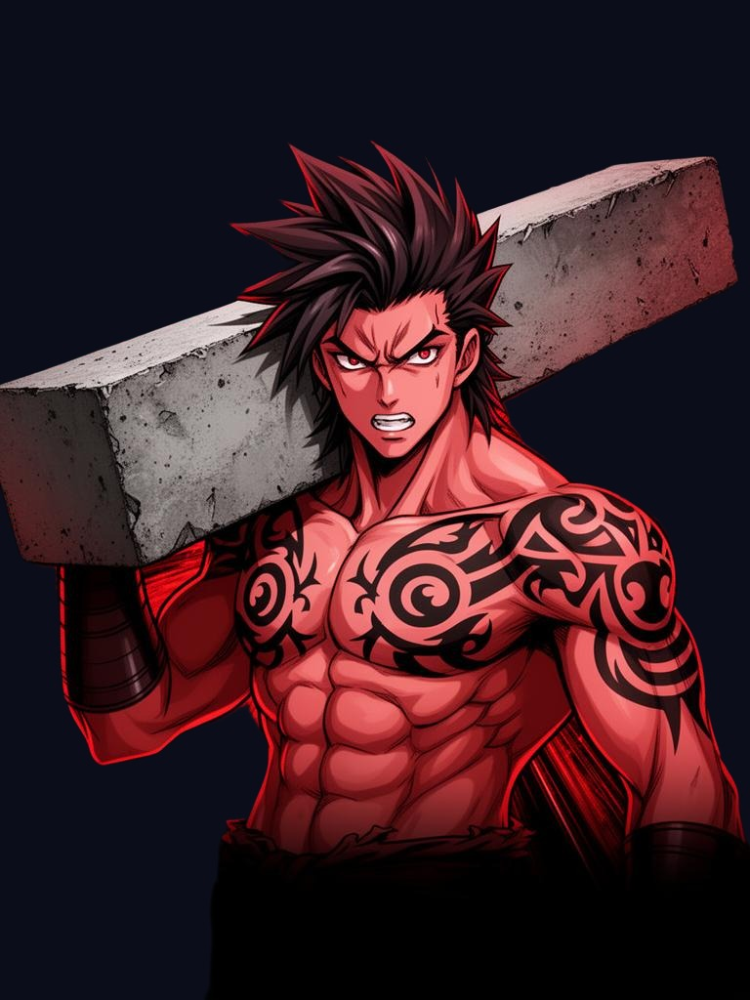
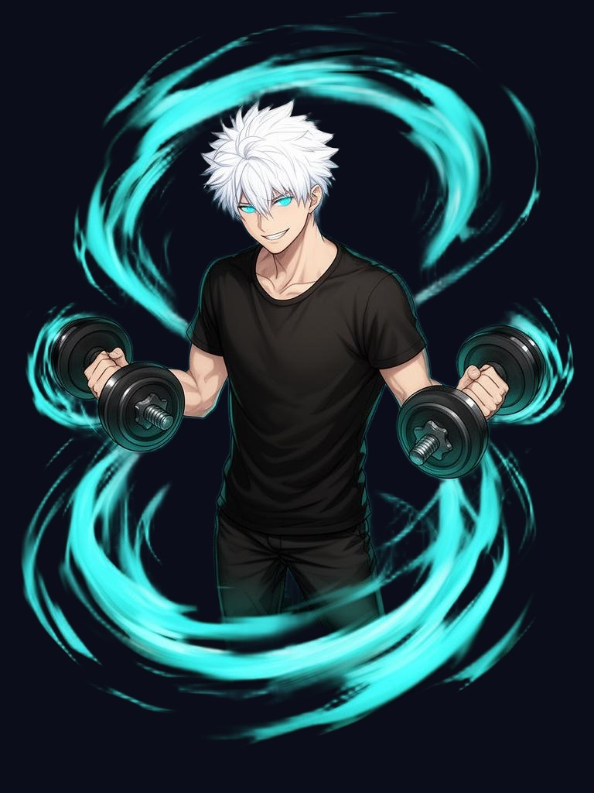

Three drivers. One nervous system. Train the wiring you actually have — not the one you wish you had.

Challenger
Intensity

Operator
Reserve
Architect
Control
Questions30
Time~6 min
Outcome1 of 3
The Neurobuild Assessment is Boltz Performance's own framework, built around three neurochemical driver patterns — dopamine-dominant, adrenaline-dominant, and inhibitor-deficient response — with lifestyle, stress, and hormonal signals layered in for adults 35–60.
Question 1 / 30Neurochemistry
Question 01
Almost there
Where should we send your result?
Your Neurobuild type, full breakdown, and profile — plus the training and nutrition approach built for your wiring.
No spam. Just your result and occasional coaching insight from Coach Boltz. Unsubscribe anytime.